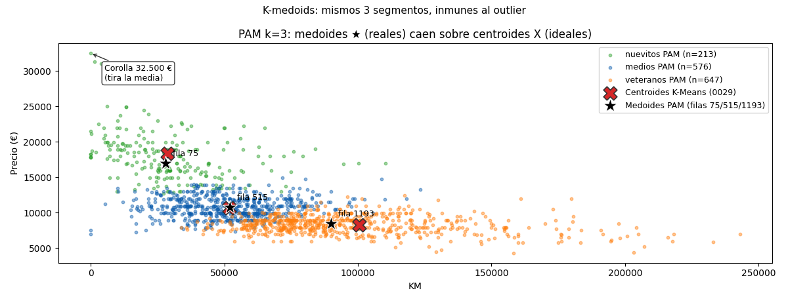

Bloque F · Clustering · Lección 0050 · mar 3 nov
K-medoids: el primo robusto de K-Means
Win de hoy: segmentar en 3 con medoides (autos reales: filas 75, 515 y 1193; grupos 213/576/647), casi idénticos a K-Means pero inmunes al outlier de 32.500 €.
1 · Medoide vs centroide: el típico ideal vs el típico real
En la lección 0029, §2 cada segmento se resumía en su centroide: el promedio del grupo, "el nuevito típico". Pero ningún auto es ese promedio: el centroide de nuevitos (28.775 km, 18.342 €, 20 meses) no existe en ninguna fila; es un auto ideal calculado. El medoide es lo contrario: el auto real más central del grupo, la fila cuya suma de distancias a sus compañeros es mínima. Si el centroide es "el promedio de la familia", el medoide es "el primo que mejor la representa".
K-medoids es K-Means con esa única diferencia: los centros son filas del dataset, no promedios. Todo lo demás se parece: pide k por adelantado (0031: codo y silueta siguen valiendo) y alterna asignar y mejorar hasta converger.
2 · PAM en 10 líneas (numpy puro, sin sklearn-extra)
El algoritmo clásico de K-medoids se llama
PAM
(Partitioning Around Medoids): cada auto se asigna a su medoide más cercano, se prueba cambiar
(swap)
cada medoide por cada no-medoide, y se queda con el cambio que más baja el
costo
(suma de distancias a los medoides). scikit-learn no trae K-medoids (vive en sklearn-extra, fuera del
stack del curso), así que lo escribimos a mano con numpy +
pairwise_distances, sobre el mismo Xs estandarizado de 0029 (KM/Price/Edad, seed 42):
import numpy as np
from sklearn.metrics import pairwise_distances
D = pairwise_distances(Xs) # matriz 1436 × 1436, una sola vez
rng = np.random.default_rng(42)
med = np.sort(rng.choice(len(Xs), 3, replace=False)) # 3 medoides al azar
def costo(med): # cada auto paga su distancia al medoide más cercano
return D[:, med].min(axis=1).sum()
actual = costo(med)
mejora = True
while mejora: # PAM: probar swaps
mejora = False
for i, m in enumerate(med):
for j in range(len(Xs)):
if j in med: continue
prueba = med.copy(); prueba[i] = j
if costo(prueba) < actual:
med, actual, mejora = np.sort(prueba), costo(prueba), True
grupos = D[:, med].argmin(axis=1) # filas 75/515/1193 · n = 213/576/647Resultado (computado en vivo, no a mano): medoides en las filas 75, 515 y 1193, costo total 1.246,98 y tamaños 213/576/647 — nuevitos (17.815 €, 29.992 km, 22 meses), medios (10.820 €, 51.568 km, 53 meses) y veteranos (8.320 €, 96.325 km, 69 meses). Casi los mismos 3 segmentos de K-Means (189/664/583): cuando dos métodos distintos cuentan la misma historia, la historia es sólida. Y los medoides se pueden señalar con el dedo: la fila 75 (28.000 km, 16.950 €, 23 meses), la 515 (52.149 km, 10.750 €, 55 meses) y la 1193 (89.983 km, 8.450 €, 70 meses).
3 · Robustez (y su precio)
El Corolla de 32.500 € (fila 109) arrastra el centroide de nuevitos hacia arriba: la media suma ese precio y lo reparte. Al medoide no lo mueve: sigue siendo la fila 75, un auto real típico, porque cambiar de medoide exigiría que el outlier fuera central para cientos de autos, y no lo es. En la figura se ve: la X roja (centroide) y la ★ negra (medoide) casi coinciden salvo donde el outlier tira.
Costo honesto: PAM prueba ~k·n swaps por pasada (acá 3 × 1436 ≈ 4.300 costos por vuelta), mucho más caro que recalcular 3 promedios. Para n grande existe CLARA: correr PAM sobre varias muestras chicas y quedarse con el mejor resultado.
4 · Figura: centroides (X) vs medoides (★)

Regenerar la figura (mismo resultado versionado en assets/img/toyota/):
python3 scripts/make_figures.py --only kmedoids-medoides-robustos5 · Quiz (auto-chequeo inmediato)
6 · Fuente primaria y cierre
Para profundizar (1 fuente):
Tan, Steinbach & Kumar, Introduction to Data Mining — capítulo de clustering (métodos particionales)
(dmbook, también en
RESOURCES.md del curso). Como segunda referencia, la
documentación de
pairwise_distances en scikit-learn.
Orden Bloque F: seguí en la lección 0031 (mié 4: validar con codo y silueta).
¿Algo no quedó claro? Preguntame al agente: medoide vs centroide en tu dato, por qué PAM converge, o cuándo pagar su costo. Esa pregunta vale más que releer.